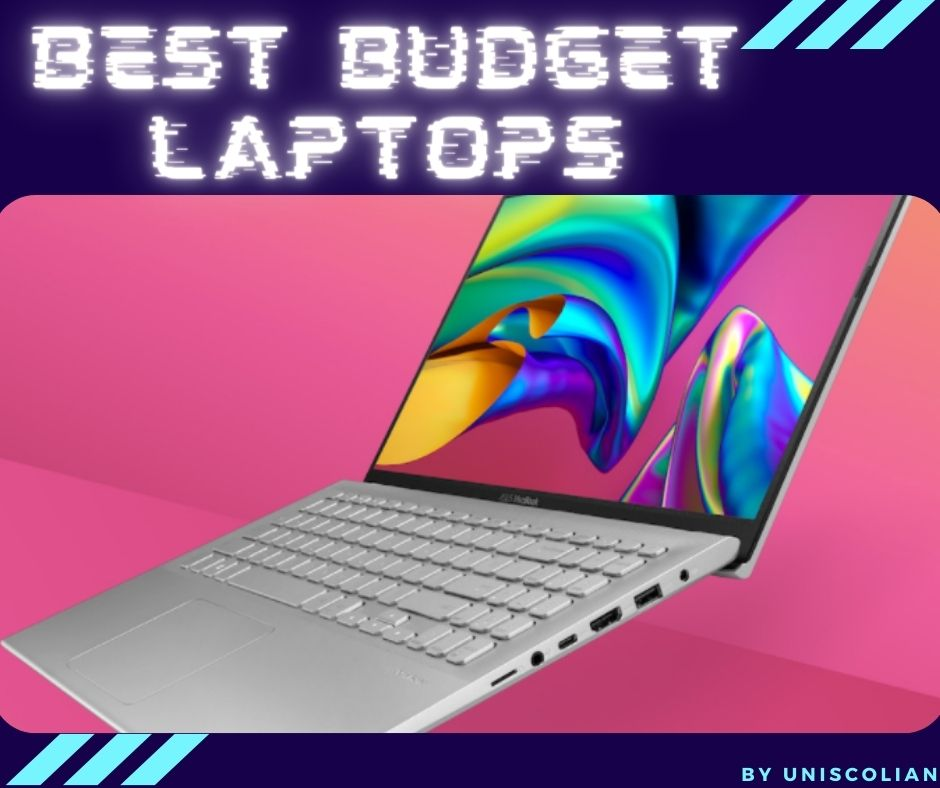
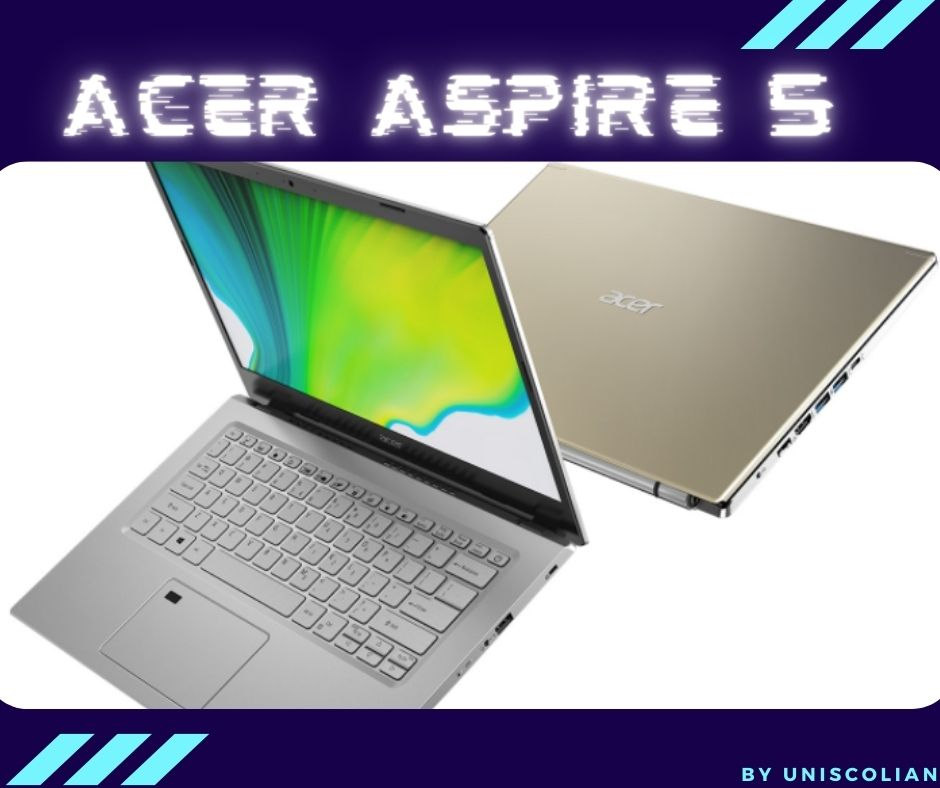
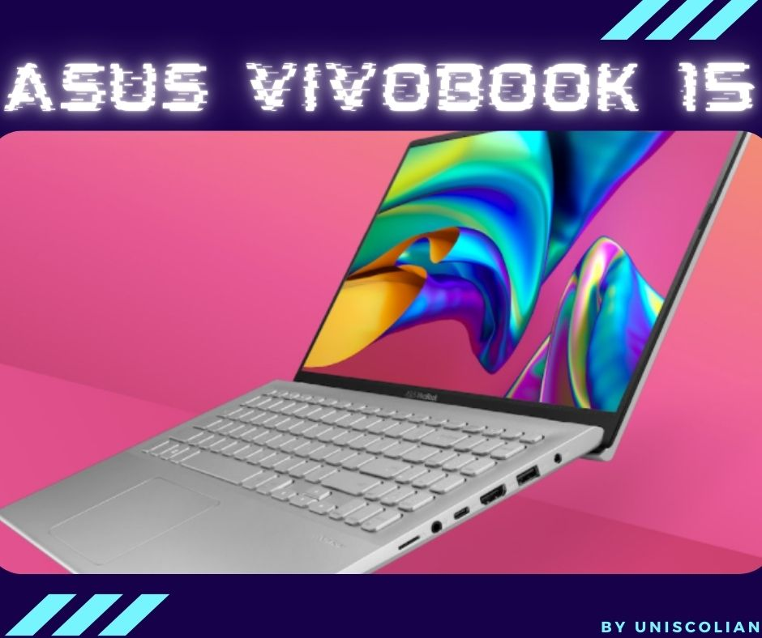
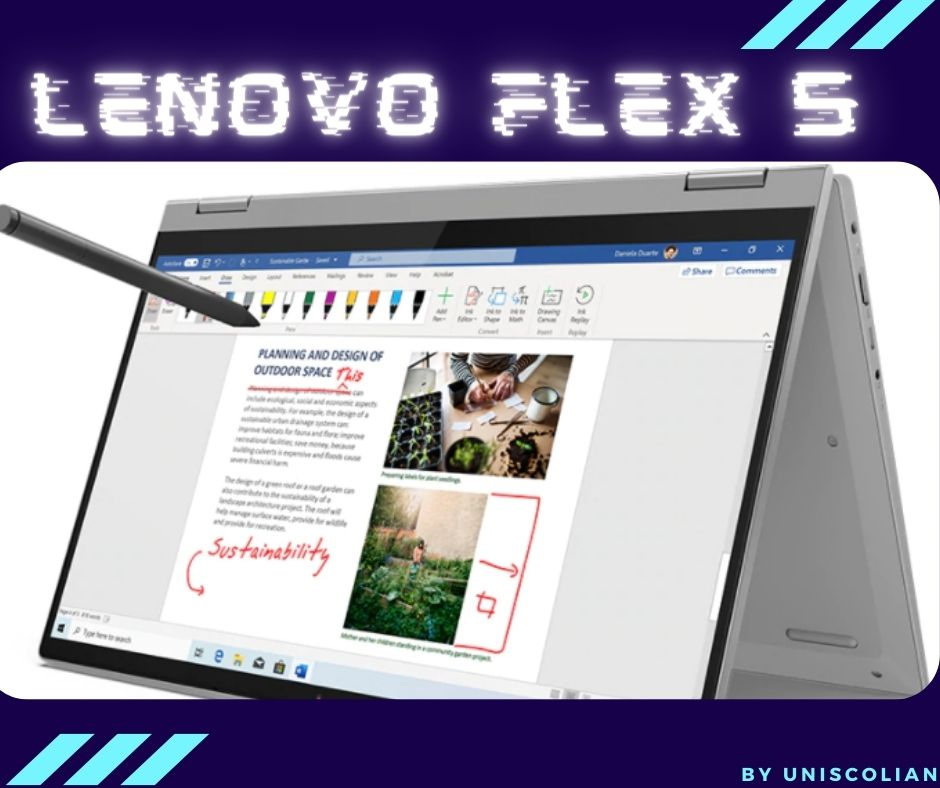
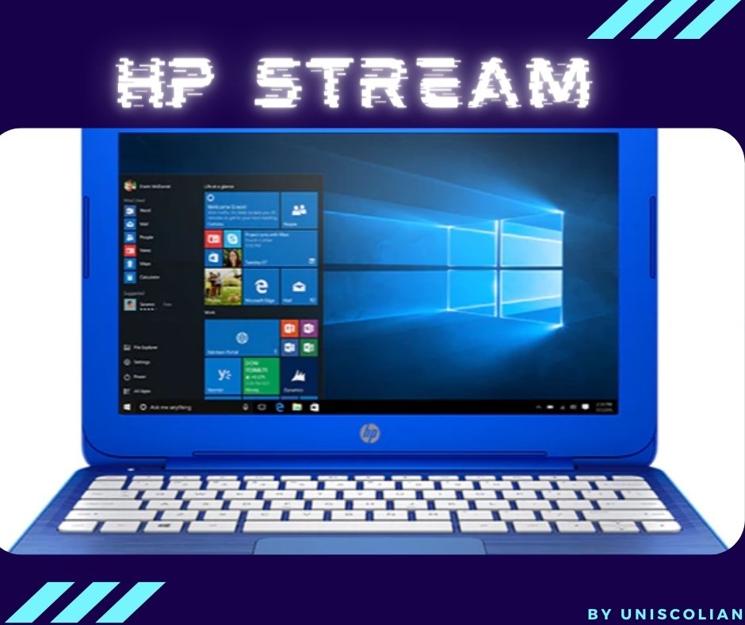
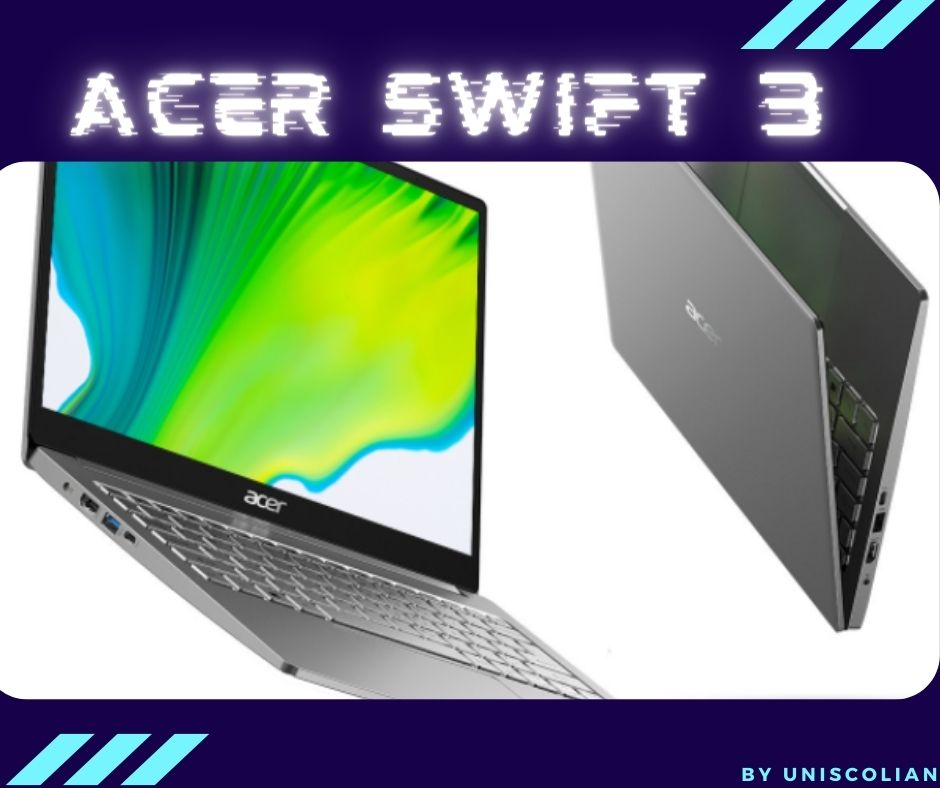
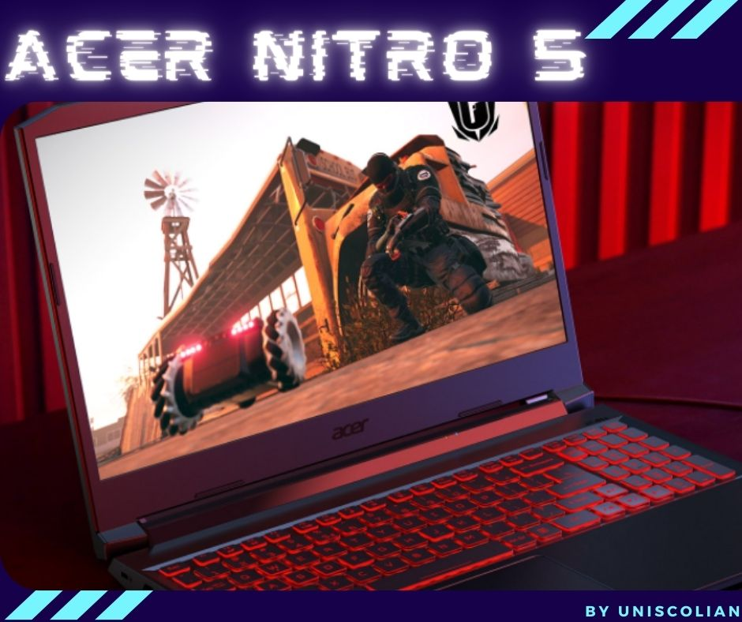
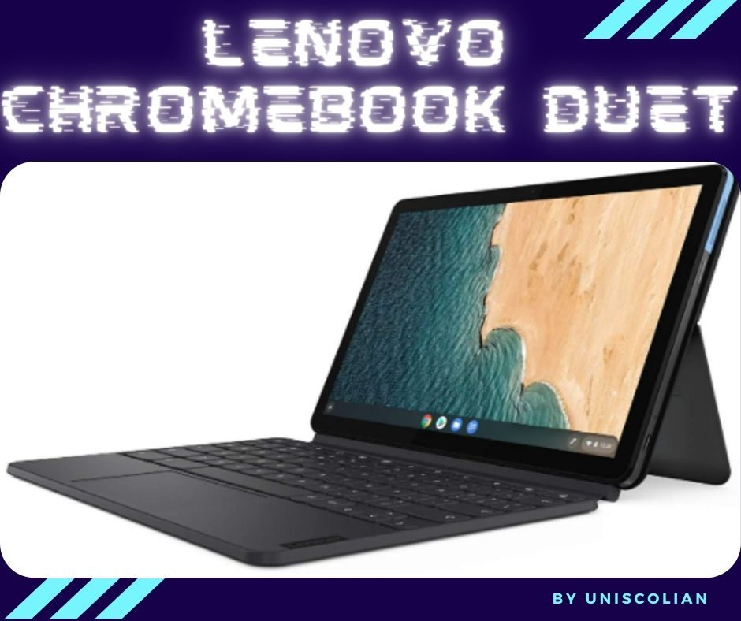
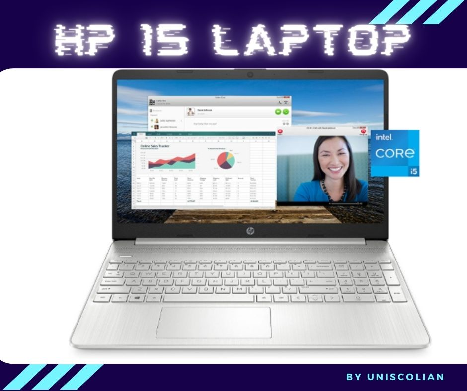

This article will go over the best budget laptop features to look for in order to get your work done without breaking the bank. Some of these laptops are perfect if you’re looking to replace an old machine or take a new one with you while traveling. Others are great options for students who need something portable but still want access to power-hungry programs like Microsoft Office, Photoshop, etc.
This article will provide you with all of the information that you need to know when it comes to Best Budget Laptops in 2021. You’ll learn about laptops that range from $200-$600 and how they compare with each other. We hope this helps make your decision easier when picking out a new laptop.
As we are talking about budget laptops we mean laptops with the best performance at the cheapest price. These laptops are not meant for heavy gaming, rendering, or 3D modeling. Most of them are basic laptops for browsing, streaming, school or official work, and sometimes casual gaming.
One more thing you have to keep in mind is that high performance with a cheap price always comes with a trade-off. In order to keep the cost low, the companies may use some below-average materials. You will always have to consider some of the flaws. We have mentioned all the negative aspects of each laptop that you may encounter after purchasing the laptop.
| Acer Aspire 5 | CPU: AMD Ryzen 3 3200U RAM: 4 GB DDR4 Storage: 128GB SSD | Check Price on Amazon |
| ASUS VivoBook 15 | CPU: Intel Core i3 1005G1 RAM: 8GB DDR4 Storage: 128GB SSD | Check Price on Amazon |
| Lenovo Flex 5 | CPU: AMD Ryzen 5 4500U RAM: 16GB DDR4 Storage: 256 GB SSD | Check Price on Amazon |
| HP Stream | CPU: Intel Celeron N4000 RAM: 4GB DDR4 Storage: 64 GB | Check Price on Amazon |
| Acer Swift 3 | CPU: AMD Ryzen 7 4700U RAM: 8 GB DDR4 Storage: 512 GB SSD | Check Price on Amazon |
| Acer Nitro 5 | CPU: Intel Core i5 10th gen GPU: NVIDIA RTX 3050 RAM: 8GB DDR4 SSD: 256 GB | Check Price on Amazon |
| Lenovo Chromebook Duet | CPU: MediaTek Helio P60T RAM: 4GB SSD: 64GB | Check Price on Amazon |
| HP 15 Laptop | CPU: Intel Core i5-1135G7 GPU: Intel Iris Xe Graphics RAM: 8GB SSD: 256GB | Check Price on Amazon |
Acer Aspire 5 (A515-43-R19L)

This laptop is one of the top-rated laptops on Amazon. Acer Aspire 5 comes with a 15.6 inch full HD display with a resolution of 1920 x 1080. The price of this laptop is very budget-friendly and appropriate for basic use only. This is not a gaming laptop so not recommended for gamers. The processor used in this laptop is AMD Ryzen 3 3200U which is a Dual-core processor. CPU clock speed is up to 3.5 GHz which is pretty amazing at this price point.
The processor is also the best in-budget one with decent performance. The memory that comes with this laptop is 4 GB DDR4 memory which is enough for basic usage. The graphics card along with this processor is AMD Radeon Vega 3. An NVMe SSD is also provided with this laptop which is 128GB. The battery life is also very high, with 7.5 hours of battery life. You will get a total of 3 USB ports with this laptop, 1 USB 3.1 port, and two USB 2.0 ports.
Very slim and lightweight laptop with an amazing design that is very easy to carry around. Acer Aspire 5 is perfect for official document work, school work assignments, browsing, streaming, overall pretty budget, and a basic laptop. It will provide you with very fast performance, you can easily switch between different software and they will open instantly without any lagging.
| Pros | Cons |
| The compressed number pad is on the right side of the keyboard. | The touchpad might feel a bit annoying. |
| Has the ability to boot in just 15 seconds. | The 4GB RAM and 128GB SSD provided is the bare minimum in today’s world. |
| Sharp and high contrast display and very clear audio. | |
| Provide opportunities to add extra memory and storage. |
ASUS VivoBook 15 (F512JA-AS34)

The ASUS VivoBook 15 is an incredibly thin 15.6-inch Full HD portable laptop with 1920 x 1080 resolution. Powered by the latest 10th Gen fast Intel Core i3 1005G1 processor with 3.4 GHz CPU clock speed. This means that whether you’re working on the latest assignment or streaming the newest Netflix series, you can do it with full confidence that you got all the power you need to make your VivoBook 15 experience as smooth and immersive as possible.
Stunning visuals come standard with the ASUS VivoBook 15, thanks to its frameless panel wrapped in the thinnest bezel on a 15-inch laptop. Maximize your view with a Full HD display, and see everything from the rich colors of photos to the deepest blacks in videos. No additional graphics card comes with this laptop. Intel UHD graphics integrated with the CPU.
Achieve all your everyday tasks with speed and ease. ASUS VivoBook also comes with 8GB DDR4 RAM and 128GB of PCIe NVMe M.2 SSD to give you smooth, responsive performance for web browsing, checking emails, watching videos, editing documents, and everything in between. Its ultra-fast USB 3.2 Type-C connector enables you to transfer data in seconds while also supplying power, so no more worrying about which cable to take with you. Also include 2 x USB 3.2 Type-A ports and 2 x USB 2.0 ports.
This is also a basic laptop. One of the best laptops on a budget. You can’t expect heavy gaming performance. Doesn’t come with a graphics card so you won’t be able to do heavy graphics-related work.
| Pros | Cons |
| with the keyboard backlit and fingerprint sensor. | 128GB of storage is the bare minimum. |
| Total of 4 USB ports and also a USB Type-C port. | Doesn’t come with a wired LAN port. |
| Opportunity to upgrade RAM and storage. | Poor screen quality, viewing angle, and audio quality |
Lenovo Flex 5 (81X20005US)

Lenovo Flex 5 is a slim and lightweight laptop. It weighs only 3.7 pounds. This device can be considered a convertible because it can rotate 360 degrees so you can use it as a tablet or a laptop. The screen is 15 inches and has a 1920 x 1080 pixel resolution. One of the best features of this laptop is the nearly bezel-less design. It looks very clean because there isn’t any branding on the side, which makes it look similar to a Macbook’s rectangle design, but with rounded edges instead of sharp ones. The base of the screen is flexible so it can bend backward to use it as a tablet or forward up to 180 degrees for watching videos.
The processor used in Lenovo Flex 5 is AMD Ryzen 5 4500U with Radeon Vega 6 integrated graphics. Powered by a very smooth and powerful CPU. The CPU has more cores which will allow multitasking very fluently. The laptop also has 16GB DDR4 RAM 3200MHz and 256GB NVMe SSD so, you don’t have to worry about performance at all. Also, include 1 USB type C port and 2 USB type-A ports. The laptop has a very long battery life of 10 hours and also supports fast charging. Zero to 80% charge in just one hour.
This laptop is best for gaming, streaming, office/school work, content creation, high productivity work, and much more. Tablet mood touchscreen with the digital pen is handy for artists. Though the company claims to provide 10 hours of battery backup, users’ reviews say otherwise.
| Pros | Cons |
| The touch screen display can also write with an included digital pen. | The screen is not bright enough for outdoor work. |
| Keyboard backlit included. | No dedicated number pad. |
| Powerful and Superfast CPU | Poor camera quality. |
| Can be used as both a laptop and tablet. | Battery backup is not as the company implies. |
HP Stream (14-cb185nr)

The HP Stream (14-cb185nr) is one of the most affordable laptops on Amazon. The device has a beautiful design and is lightweight, weighing only 3.17 lbs which makes it perfect for taking on your travels or using in classes where you cannot bring heavy equipment like laptops or tablets.
With a 14-inch screen, the device is compact and can easily fit your carry-on or backpack. You will be able to take it anywhere you go as it uses a battery that can last up to 10 hours on a single charge.
Hp Stream is powered by an Intel Celeron N4000 processor. It is a dual-core processor with a CPU clock speed up to 2.6 GHz. The laptop has 4GB of DDR4 RAM 2400 MHz and 64 GB of internal storage. It does not have an optical drive which means you cannot watch DVDs on it.
However, if you are someone who likes watching movies and TV shows on a laptop, then this device will suit your needs just fine.
The laptop also has a 1-year subscription to Office 365 Personal which means you will have access to all of the latest Microsoft Word, Excel, Powerpoint, and 1 TB of OneDrive storage features as soon as you activate your account. This is perfect for those who are looking for a device that provides them with all they need for school or at work.
The processor given in this laptop is very basic and has an entry-level CPU. The RAM is not upgradeable which means you can not add extra RAM to this laptop. The internal storage provided in this laptop is only 64GB which is below average. The operating system will take away most of your storage and there will be very little storage left for you to keep your important documents.
It is perfect for anyone looking for a laptop that can stream movies or videos, and browse the web without having to spend too much money. You can’t expect gaming or heavy software work with this laptop. It provides you with a light, powerful and affordable solution for your everyday computing needs. HP Stream is the best budget laptop if only streaming and basic official works are your top priority.
| Pros | Cons |
| One year free trial of Microsoft Office with 1TB OneDrive storage. | Very low storage space. You won’t be able to install the extra necessary software or documents on this laptop. |
| An Extra SD card slot is provided to increase the storage capacity. | In case of reinstalling Windows, you will lose the 1 year trial of Microsoft Office. |
| Cheapest laptop on Amazon with the highest reviews and performance. | Very low-end configuration only for browsing and streaming. |
Acer Swift 3 (SF314-42-R9YN)

The Acer Swift 3 weighs in at 2.65 pounds and has dimensions of 12.73″ x 8.62″ x 0.63″. It’s really a lightweight laptop. The display is a 14″ Full HD IPS screen with a 1920 x 1080 resolution, bringing the 16:9 aspect ratio.
The Acer Swift 3 laptop uses an AMD Ryzen 7 4700U which is a very powerful octa-core processor with a CPU precision boost up to 4.1 GHz. It also has an L3 cache memory of 8 megabytes. This laptop comes equipped with 8 GB of LPDDR4 RAM. The Ryzen 7 CPU with 8 GB RAM will provide you super-smooth performance with gaming, video editing, content creation, graphics design, and other heavy workload activities.
Acer Swift 3 also comes with a 512 GB NVMe SSD and Radeon integrated graphics. 512 GB SSD storage is sufficient for installing your necessary software and keeping important documents. The laptop contains 1 USB Type-C port, 1 USB 3.2 port and 1 USB 2.0 port.
Acer Swift 3 has a really powerful processor, one of the high-end processors I must say but the laptop has a heating issue. You won’t be able to use the processing power of this laptop to its full potential. The laptop will eventually get too hot and the processor will be limited by the cooling system. The screen and color quality are below average. Not recommended for video editing works.
Overall, I think this laptop is good for students, business people, and casual gamers, but it may not be the best option if you want a laptop to do video editing, graphic design, or 3D modeling.
| Pros | Cons |
| Comes with a fingerprint sensor and keyboard backlit. | The RAM is not upgradable. Only 6 hours of average battery life which is below average. |
| Very powerful Ryzen 7 processor capable of handling very heavy workloads. | The sound quality is not up to the mark. |
| Best budget laptop with 512GB SSD | A processor can not be used to its full potential due to heating issues. |
| Screen and color quality are not up to the mark. |
Related Article: How Much Does It Cost to Replace a Laptop Keyboard?
Acer Nitro 5

Acer Nitro 5 is one of the best budget gaming laptops. Acer has done a tremendous job with this laptop while keeping the price low and also providing solid gaming performance. It has a very sturdy build quality and aesthetic look. Due to the build quality, it would be able to handle accidental drops.
Intel Core i5 10th gen CPU paired with RTX 3050 is probably the best combination at this sort of budget price range. The 4GB dedicated NVIDIA RTX 3050 powerful graphics card is capable of handling any sort of high-power consuming game. In order to boost the overall performance, this laptop comes with 8GB of DDR4 RAM and 256GB NVMe SSD.
Full HD display with a 15.6-inch screen provides a very vibrant look. The fast 144Hz refresh rate looks really great in motion. Provides an amazing gaming experience. You can do heavy gaming without worrying about any heating issue due to Acer CoolBoost technology. This is a smart thermal solution that increases the CPU and GPU fan speed under heavy pressure.
In simple words, this laptop is the best bang for your buck. You are getting the best gaming combo at a very cheap price. This budget laptop is recommended mostly for gamers who are into heavy gaming. Also recommended for other professional works which require dedicated graphics card support. The main focus of this laptop is the optimized design with the heavy-duty performance considering the budget price.
| Pros | Cons |
| Sweet CPU GPU combo at a very suitable price. | 256GB SSD is not enough storage for ideal gaming. Will require an extra storage upgrade eventually. |
| RTX 3050 dedicated graphics card. | The keyboard backlight turns on when a key is pressed and turns off after 30 seconds. |
| RAM is upgradable up to 32 GB. | Battery life won’t last very long while doing heavy gaming. For best gaming experience recommended using while plugged in. |
| Storage is upgradeable. | Make sure the battery is set to “better performance” rather than “best performance” regardless of whether it’s plugged in or not for long-lasting performance. |
| Gaming keyboard backlit. |
Related Article: Things To Do Before Selling Your Laptop
Lenovo Chromebook Duet

For light and professional use, Chromebooks are really popular these days. Chromebooks are really budget-friendly laptops. In less than 200$ you are getting a laptop which is really unbelievable. Lenovo has done a flawless job with this device. The cheapest laptop you can ever ask for.
Well, there are some significant differences between laptops and Chromebooks. For example, there is no Windows operating system rather it’s Chrome OS. This Chromebook has a MediaTek Helio P60T processor. The CPU is not an Intel processor rather it’s an average smartphone CPU. 4GB of RAM is included and 64GB SSD storage. 10-inch touch screen display with 1920 x 1200 resolution.
This laptop is mainly designed for browsing and streaming. The RAM and low-end CPU are not capable of supporting heavy multitasking. You can work on several tabs on the browsers, do zoom meetings, or stream youtube or Netflix. More than 10 tabs on Chrome are not recommended. The device will get slow and annoying. For light use, the performance is pretty decent. Battery backup is superb. In medium brightness, it’s capable of up to 12 hours of backup.
Very light and sturdy built quality. The camera is also not bad. According to the price tag, overall performance is amazing. You can not expect gaming on this device. But simple and light gaming is possible. The worst downsides are that there is only one type C port and no other port and also no other way to increase the storage. There is not even an sd card slot. So you can not keep large document files in your device. You can not even install lage softwares due to the storage issue. So if you are okay with only using the browser and one or two light apps then this is the perfect device for you. Other than that please do your proper research first before purchasing.
| Pros | Cons |
| 12 Hours of high battery backup. | Only a type C port, no USB port. Recommended purchasing a USB hub. |
| Touchscreen display | The keyboard is annoyingly small for an adult. |
| Decent camera and USB type C port. | No way to increase the storage. |
| Very Very cheap price. | You can’t record meetings due to a lack of storage. |
| The CPU is very low-end. |
HP 15 Laptop 15-dy2021nr

According to the configuration of the following laptop, it can be called an ideal budget laptop. Ideal because this budget laptop has the latest configuration which can handle any professional task. Unlike other budget laptops, this one is not limited to only browsing or streaming. You can do all sorts of multitasking stuff and run most of the heavy softwares whether you are a professional or a student.
Let’s head to the configuration, this laptop is powered by the latest 11 Gen Intel Core i5 processor. Also comes with 8GB of DDR4 RAM. This beast CPU and RAM combination allows this laptop to do heavy multitasking with any software. Professional CAD softwares will also run just fine with this laptop. You may also do gaming which doesn’t require a dedicated graphics card as this laptop comes with Intel Iris Xe integrated graphics. This integrated graphics also performs fabulously. All this comes to around only a $500 budget. This is why I think this laptop is one of the best deals.
Let’s dive into the design part, we can see this laptop has a very glossy and professional look. For those who don’t prefer gaming sort of designs but desire heavy performance, this laptop is just the one for you. Micro edge bezel and 15.6-inch FHD display make the screen more vibrant. 256GB NVMe M.2 SSD is given in the laptop which will also boost the overall smooth performance of the laptop. 7 hours of battery life is pretty decent for a professional laptop.
| Pros | Cons |
| With the 11th Gen Intel i5 CPU with 8GB RAM at around $500, you are getting the real value of your money. | No keyboard backlit, difficult to work while lights are off. |
| Enabled fast charging 0-50% in just 45 minutes. | Grey lettering on the silver keys was a very poor move. The latter can hardly be seen. SSD is not upgradable. You are stuck with the storage you have. |
| Very fast and smooth performance. Boots very fast. | The screen is not so great for outdoor use. The battery backup is not outstanding. |